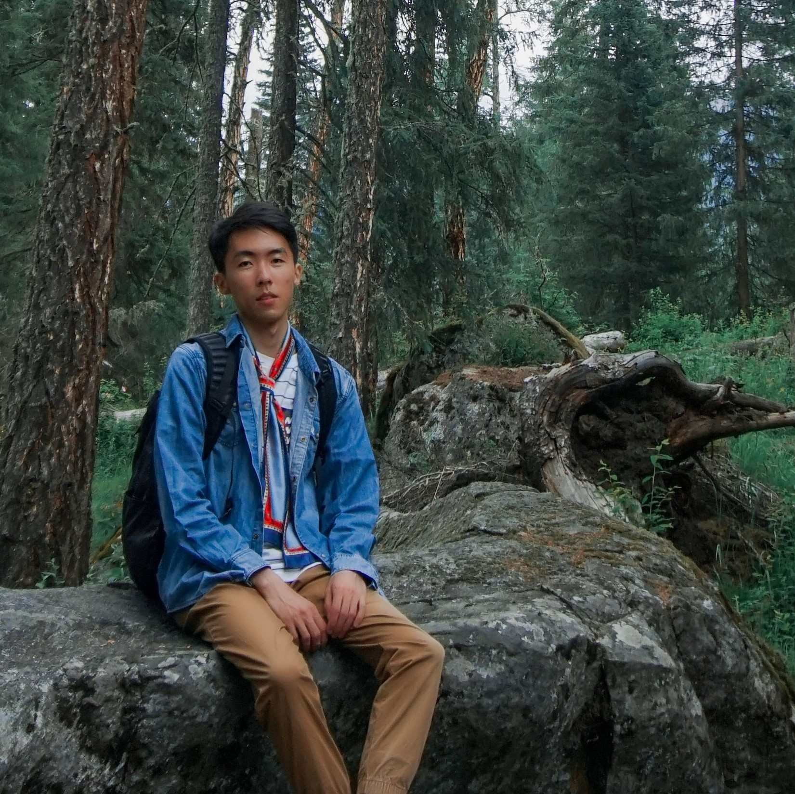
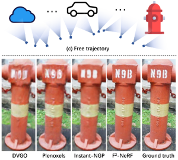
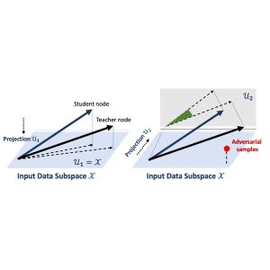

|
I'm Zhaoxi Chen, a second-year Ph.D. student in the School of Computer Science and Engineering at Nanyang Technological University (MMLab@NTU), supervised by Prof. Ziwei Liu. Prior to it, I received my bachelor degree in the Department of Automation from Tsinghua University in 2021. Email / CV / Google Scholar / Github |
 |
|
[04/2023] Selected as a Finalist of 2023 Meta Research PhD Fellowship! [02/2023] One paper accepted to CVPR 2023 as Highlight. [01/2023] One paper accepted to ICLR 2023 as Spotlight. [08/2022] One paper accepted to TOG (Proc. SIGGRAPH Asia 2022). [07/2022] One paper accepted to ECCV 2022. [08/2021] Join MMLab@NTU! [07/2021] One paper accepted to ICCV 2021 for Oral presentation. |
|
I'm interested in computer vision and deep learning, especially in the field of neural rendering. |

|
Zhaoxi Chen, Guangcong Wang, Ziwei Liu arXiv, 2023 [Project Page] [Paper] [Video] [Code] 

SceneDreamer learns to generate unbounded 3D scenes from in-the-wild 2D image collections. Our method can synthesize diverse landscapes across different styles, with 3D consistency, well-defined depth, and free camera trajectory. |
|  |
Peng Wang*, Yuan Liu*, Zhaoxi Chen, Lingjie Liu, Ziwei Liu, Taku Komura, Christian Theobalt, Wenping Wang CVPR, 2023 (Highlight) [Project Page] [Paper] [Code] 

F2-NeRF enables arbitrary input camera trajectories for novel view synthesis and only costs a few minutes for training. |

|
Fangzhou Hong, Zhaoxi Chen, Yushi Lan, Liang Pan, Ziwei Liu ICLR, 2023 (Spotlight) [Project Page] [Paper] [Video] [Code] 

EVA3D is a high-quality unconditional 3D human generative model that only requires 2D image collections for training. |
 |
Zhaoxi Chen, Guangcong Wang, Ziwei Liu TOG, 2022 (Proc. SIGGRAPH Asia) [Project Page] [Paper] [Video] [Colab] [Code] 

Text2Light can generate HDR panoramas in 4K+ resolution using free-form texts, without training on text-image pairs. The high-quality generated HDR panoramas can be directly applied to downstream tasks, e.g., light 3D scenes and immersive virtual reality. |
 |
Zhaoxi Chen, Ziwei Liu ECCV, 2022 [Project Page] [Paper] [Code] 

Relighting4D takes only videos as input, decomposing them into geometry and reflectance in a self-supervised manner, which enables relighting of dynamic humans with free viewpoints by a physically based renderer. |
 |
Yulin Wang*, Zhaoxi Chen*, Haojun Jiang, Shiji Song, Yizeng Han, Gao Huang ICCV, 2021 (Oral Presentation) [Paper] [Code] 

In this paper, we explore the spatial redundancy in video recognition with the aim to improve the computational efficiency. Extensive experiments on five benchmark datasets, i.e., ActivityNet, FCVID, Mini-Kinetics, Something-Something V1&V2, demonstrate that our method is significantly more efficient than the competitive baselines. |
|

|
Zhuolin Yang*, Zhaoxi Chen, Tiffany Cai, Xinyun Chen, Bo Li, Yuandong Tian* AISTATS, 2021 [Paper] In the case of low-rank input data, we show that student specialization still happens within the input subspace, but the teacher and student nodes could differ wildly out of the data subspace, which we conjecture leads to adversarial examples. |
|
|
|
MMLab@NTU, Nanyang Technological University Ph.D. student supervised by Prof. Ziwei Liu |
Aug. 2021 - Now |
|
BNRist, Tsinghua University Undergraduate thesis supervised by Prof. Gao Huang |
Dec. 2020 - Jul. 2021 |
|
Secure Learning Lab, University of Illinois at Urbana-Champaign Visiting research intern advised by Prof. Bo Li |
May. 2020 - Oct. 2020 |
|
GRASP, University of Pennsylvania Intern advised by Prof. Mark Yim |
Jun. 2020 - Sep. 2020 |
|
Meta Research PhD Fellowship, Finalist, 2023 AISG PhD Fellowship, 2021 |
|
Conference Reviewer: CVPR, ICCV, SIGGRAPH, NeurIPS Journal Reviewer: TOG, IJCV |
|
I'm a fanatical music lover, with skills in saxophone, piano, and guitar. |
|
| Website template credits to Jon Barron. |